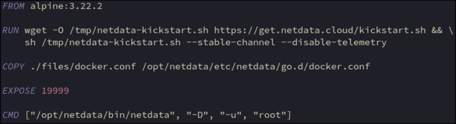

Use wget to pull in the official netdata set up script and execute it (the alpine package wouldn’t work with the docker plugin)
Add the docker plugin config to the container
Standard netdata port
Not exposed externally, use nginx as reverse proxy
Run the netdata binary
-D = do not daemonize (stay in foreground)
-u root = run as root (needed to access docker socket)